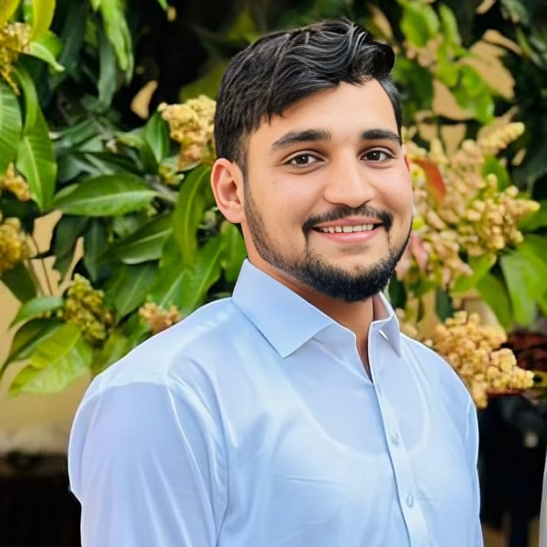

Riaz Ud Din

Summary
I am a motivated, hardworking, and dedicated individual with passion for web development.
Education
Secondary Education (Intermediate in Pre-Engineering)
Brilliant Science College Katlang (2019-2021)
Marks: 976/1100
Matric (Science)
Ghazali School Katlang (2017-2019)
Marks: 994/1100
Work Experience
Volunteer Teacher and Blood Drive Coordinator
Namal Society for Social Impact (NSSI)
- Teaching Mathematics
- Blood Donation Drive
Teacher Assistant
Brilliant Science College Katlang
- Record Keeping
- Curriculum Development
- Classroom Management
Skills
Programming
- Intermediate: HTML
- Advance: C++
Software
- Cisco Packet Tracer (Networking)
- MS Office
Language
- Pashto: Native Speaker
- Urdu: C2 Proficiency
- English: B2 Proficiency
Awards
Academics
- Top 1/60 in Brilliant Science College in XII examination (2021).
Competitions
- Top 1/132 in District Level Calligraphy Competition (AFAQ EXPO-2019).
- Top 1/25 in District Level Calligraphy Competition (Private School Management Association (PSMA) Mardan-2018).
- Top 1/30 in Painting Competition (Ghazali School Katlang-2017).
- Top 1/35 in Painting Competition (Ghazali School Katlang-2016).
Certifications
- Write Professional Emails in English (Georgia Institute of Technology(Coursera) 2023).
- Advance Programming in C++ (Brilliant Science College Katlang-2021).
- Best Host of The Session 2019-2021 (Brilliant Science College Katlang).
Other